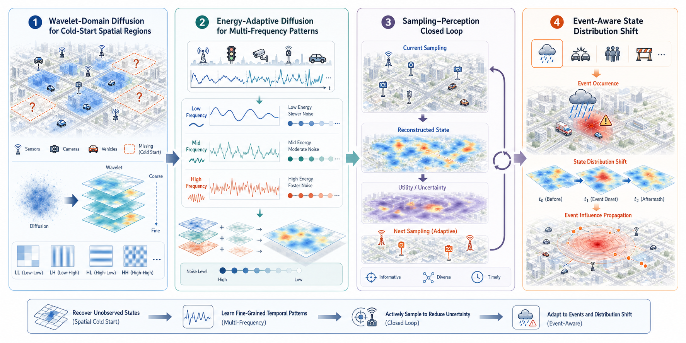
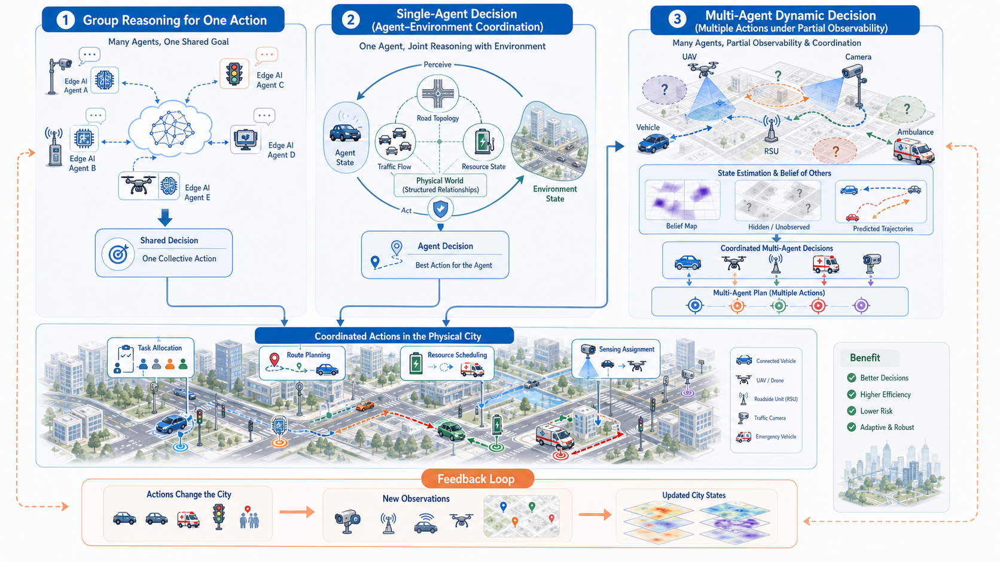
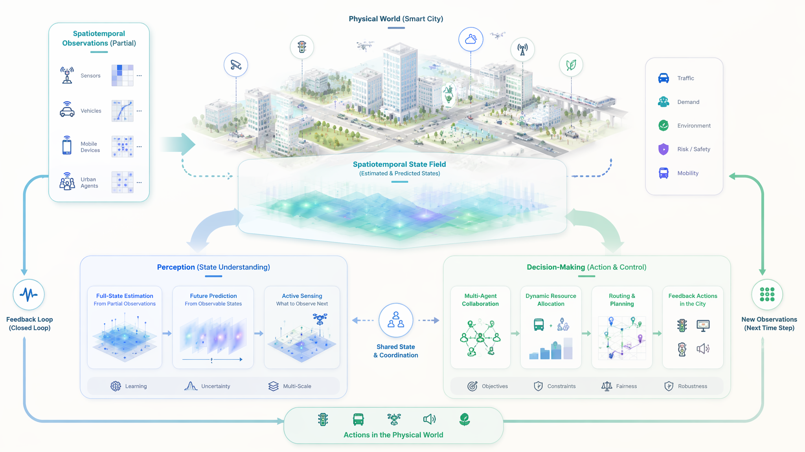
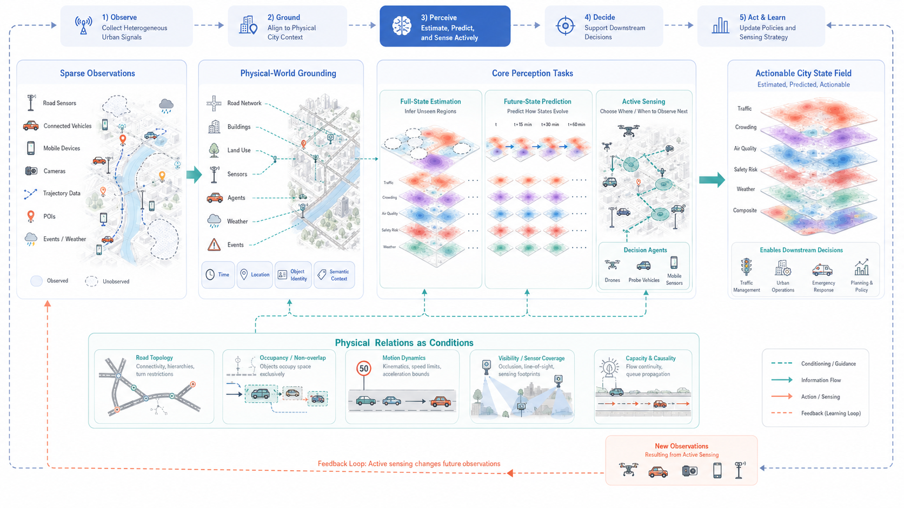
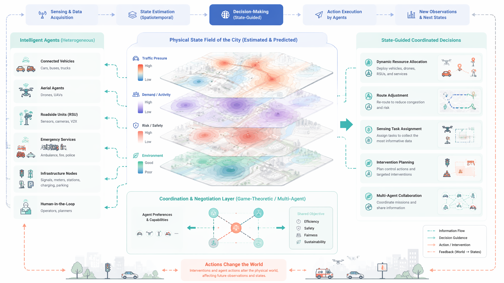

面向物理世界的
城市时空感知与
智能体协同决策
从物理世界状态如何存在、演化并响应行动出发，把多源时空观测转化为可估计、可预测、可更新的城市状态，并与城市智能体协同决策形成反馈闭环。
State Field
近期可以收束为两条连续主线
感知：从稀疏观测到城市状态
近期工作围绕时间序列预测、未观测位置估计、主动采样与协同感知展开，逐步回答“在观测不完整的情况下，如何恢复和预判城市物理状态”。
2026
未观测位置的时空估计
2026
时间序列预测中的频率建模
2026
资源受限城市应用中的协同感知
决策：从状态认知到协同行动
多智能体协作、动态资源配置、在线选择与城市语义解析，为“状态如何转化为行动”提供了方法基础，也自然连接到未来的状态引导决策。
2026
潜在博弈引导的多智能体动态资源配置
2026
LLM 辅助在线子集选择算法设计
2025
空间语义增强的城市地址理解
感知主线：从状态分布学习到事件驱动感知
将 diffusion process 迁移到小波域，在多频带中拆解空间区域的状态变化模式，提升未观测区域估计能力。
不同能量频段匹配不同加噪策略，让模型学习传感器时间序列中更细的趋势、波动与突变。
用感知重建结果指导下一轮采样决策，在有限采样条件下最大化城市状态信息量。
将事件影响的扩散过程融入状态分布学习，刻画天气、事故、活动等事件造成的时空分布偏移。
恢复未观测状态 → 分解多频变化 → 主动选择观测 → 适应事件扰动。

已有工作从“补全状态”逐步扩展到“理解状态如何随频率、采样和事件发生变化”。
决策主线：从推理能力增强到状态关系驱动协同
多个能力互补的小规模大模型在边缘设备上头脑风暴，提升分布式集群的总体推理能力。
将城市物理运行规律与智能体状态联合建模，让 state 不只是条件输入，也参与关系学习。
在部分可观测城市环境中，同时估计环境状态与其他智能体状态，辅助多行动协同。
决策结果会改变道路、资源、风险与观测分布，并反向更新下一轮感知与策略。
增强推理能力 → 学习环境关系 → 估计其他主体 → 闭环改变城市状态。

决策工作不只优化 action，而是把智能体、环境变量和其他主体的动态关系一起纳入推理。
从物理约束到物理关系学习
已有工作为“状态如何估计”和“行动如何选择”打下基础；下一步的关键，是让模型不只使用物理先验，而是学习城市对象、状态与行动之间如何相互影响。
过去研究基础
- 感知与决策相对分开：感知侧估计、预测和采样，决策侧调度、配置和协作。
- 物理世界多作为先验约束：路网连通、速度范围、容量限制和对象非重叠。
- 物理知识也常被编码成输入特征：POI、道路、传感器和空间语义。
未来研究转向
- 学习对象—对象关系：车辆、道路、传感器、事件和资源如何相互影响。
- 学习状态—行动关系：行动如何改变交通、风险、需求与下一轮观测。
- 学习感知—决策闭环：决策反哺感知，感知更新策略。
不是把更多物理先验塞进模型，而是让模型学习物理世界中状态、对象与行动之间的可推演关系。
为什么要把时空估计与感知决策融合？
已有工作为状态估计、预测、采样和决策打下基础；新的问题是，如何从“使用物理先验约束模型”走向“学习物理世界关系”，让状态进入智能体行动并被反馈持续修正。
从学习“数据到答案”的映射，转向学习“物理世界状态如何存在、演化并响应行动”的关系
核心科学问题：局部观测如何成为可决策的世界状态？
问题的本质不是把更多数据简单拼接起来，而是把局部、异构、动态的观测转化为能描述真实城市、预测未来变化、约束行动后果的状态表达。
如何把轨迹、传感器、事件和空间语义对齐到时间、位置、对象与物理结构，形成统一的城市状态场？
在部分观测和不确定性存在时，如何估计不可见区域，并预测状态在事件、环境和行动影响下的演化？
当观测资源有限时，智能体应优先观察哪些位置、对象和时间片，才能最大化状态认知价值并降低决策风险？
如何把估计、预测和不确定性转化为多智能体协作、资源配置和行动规划的依据，并接受反馈更新？
以时空映射建立状态，以物理世界关系学习状态如何相互影响，以智能体反馈更新状态。
总体框架：观测—感知—决策—反馈
整体框架以时空观测为入口：先把传感器、车辆、轨迹和事件对齐到物理世界，再形成可估计、可预测、可更新的城市状态场。感知侧提供状态与不确定性，决策侧利用状态变量关系推演行动后果，行动再反哺下一轮观测。

方向一：面向城市物理世界状态的时空感知
这里的“感知”采用广义定义：不仅是看见局部观测，也包括基于局部观测恢复全量状态、预测未来状态、主动选择下一步观测，并为决策提供可用的状态表达。
全量状态估计
由部分观测恢复不可见区域和对象状态，显式考虑位置、路网结构、空间语义、状态共现与物理可行性。
未来状态预测
从历史趋势外推走向建模城市状态如何随时间、事件、环境变化和智能体行动共同演化。
主动观测选择
在观测资源有限时，选择最能降低状态不确定性、提升信息量并影响决策风险的位置、对象和时间片。
核心输出不是单个预测值，而是带有不确定性、物理语义和行动关联的城市状态场。
感知分支框架：从部分观测到全量与未来状态
这一分支把稀疏观测映射到物理城市：时间、位置、对象身份和空间语义共同定义状态坐标，路网拓扑、运动可行性、覆盖范围和容量限制不只是输入条件，也用于学习对象与状态之间的影响关系。

方向二：基于城市状态变量关系的智能体协同决策
城市智能体不是在抽象环境中选择动作，而是在道路、资源、风险、需求和其他智能体共同变化的物理世界中决策；因此决策需要理解状态变量之间的关系和行动后果。
从“看见状态”到“推演行动”
决策输入不仅是预测值，还应利用交通流、供需、路网、资源与风险等变量关系，推演行动会怎样改变城市状态。
从“单体最优”到“群体协同”
多智能体协同需要理解行动之间以及行动与状态变量之间的耦合，让调度、管控和采样服务于整体状态改善。
决策分支框架：状态场驱动协同行动
决策分支以状态场为共同语境：智能体不仅检查物理可行性，更要学习道路、资源、风险、其他智能体与行动之间的影响关系，并据此完成协同。

形成研究体系：三阶段推进
未来研究不追求单点算法堆叠，而是逐步形成“状态表示—状态推演—行动反馈”的方法体系，让感知与决策能够在同一个物理世界状态空间中协同。
近期：状态感知基础
围绕未观测区域估计、时间序列预测、事件扰动建模、主动采样与协同感知，形成可迁移的城市状态建模方法。
中期：状态—决策耦合
把状态估计、未来预测和不确定性嵌入多智能体资源配置、任务分配、路径规划和动态协作框架。
长期：城市具身智能
让车辆、传感器、基础设施和服务系统成为能够理解状态、预测后果并改变物理世界的协同智能体。
构建“面向物理世界的时空智能底座”，既能描述城市，也能支撑城市智能体的行动。
研究价值：把时空数据挖掘推向物理世界智能
这一方向的价值在于把“时空数据分析”推进到“物理世界中的状态理解与行动推演”：模型不仅解释过去，还能服务未来行动，并从行动反馈中持续更新。
理论价值
提出状态引导的感知决策统一视角，连接时空建模、多智能体系统、世界模型与城市具身智能。
方法价值
形成状态估计、未来预测、主动观测、变量关系推演和协同决策的闭环方法体系。
应用价值
服务交通、应急、环境、物流与公共服务等城市动态资源优化场景，提升状态认知和行动效率。
平台价值
沉淀可复用的城市状态建模、智能体决策评测和物理反馈仿真实验平台，支撑持续研究积累。
从“数据描述城市”到
“状态驱动智能体理解并改变城市”
未来研究的主线，是以时空观测为入口、以物理世界状态为中枢、以多智能体感知决策为出口，建立智慧城市走向具身智能的一套研究体系。